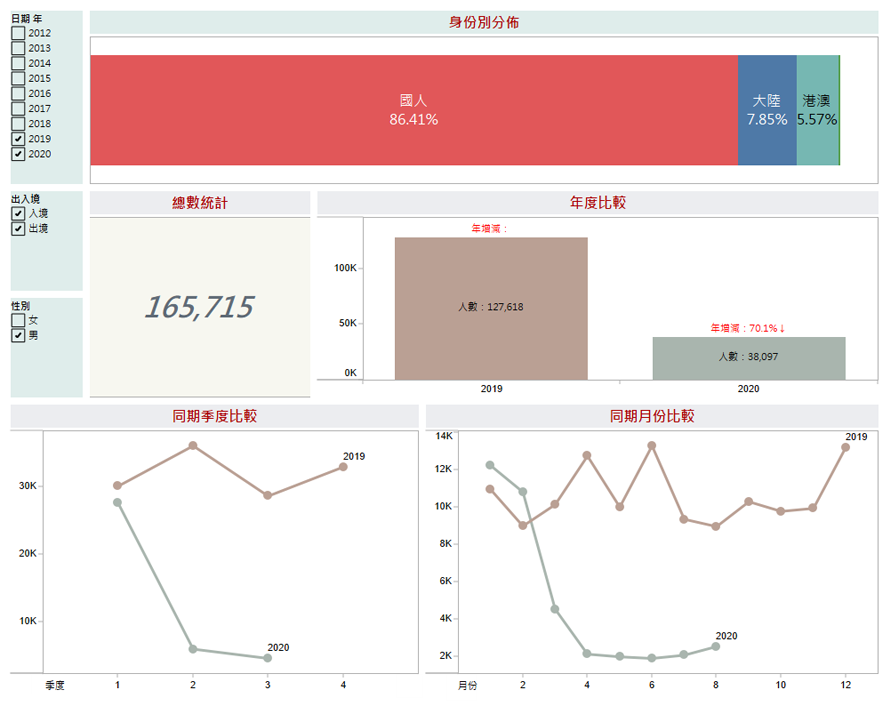

按Enter到主內容區
:::
回首頁
回全球網
網站導覽
小
中
大
您的瀏覽器不支援JavaScript語法，JavaScript語法並不影響內容的陳述。您可使用按鍵盤上的Ctrl鍵+ (+)鍵放大/(-)鍵縮小來改變字型大小；回到上一頁可使用瀏覽器提供的 Alt+左方向鍵(←) 快速鍵功能；列印可使用瀏覽器提供的(Ctrl+P)功能。您的瀏覽器，不支援script語法，若您的瀏覽器無法支援請點選此超連結
網站導覽
:::
大陸來台
大陸地區人民、港澳居民、無戶籍國民來臺居留、定居人數統計表
大陸地區人民進入臺灣地區（各類交流）人數統計表
外籍配偶
我國人與外籍人士離婚統計
外籍配偶人數與大陸(含港澳)配偶人數按證件分
我國人與外籍人士結婚統計
移民輔導
移民照顧輔導成果統計表
團聚面談
大陸地區配偶申請來臺團聚面談
入出境人數
入國(境)人數－按地點分統計表
出國 (境)人數－按年齡分統計表
出國 (境)人數－按地點分統計表
入國 (境)人數－按年齡分統計表
人口販運
各司法警察機關查緝人口販運案件統計表
失聯移工
失聯移工人數統計表
外僑居留
外僑居留人數統計表
性別統計
性別統計-入境
性別統計-出境
出入境儀表板

回頁首